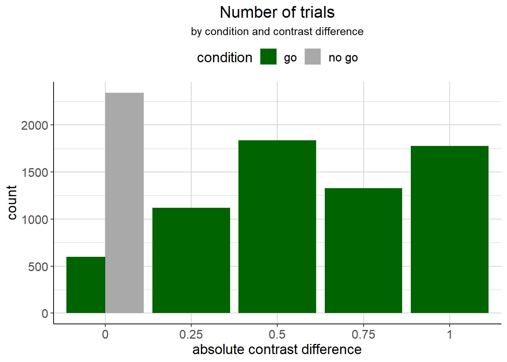
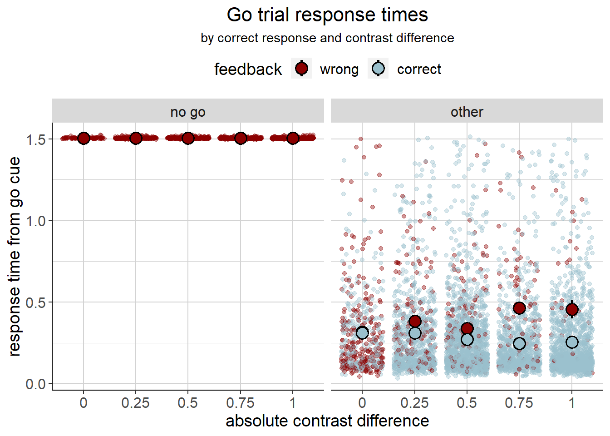
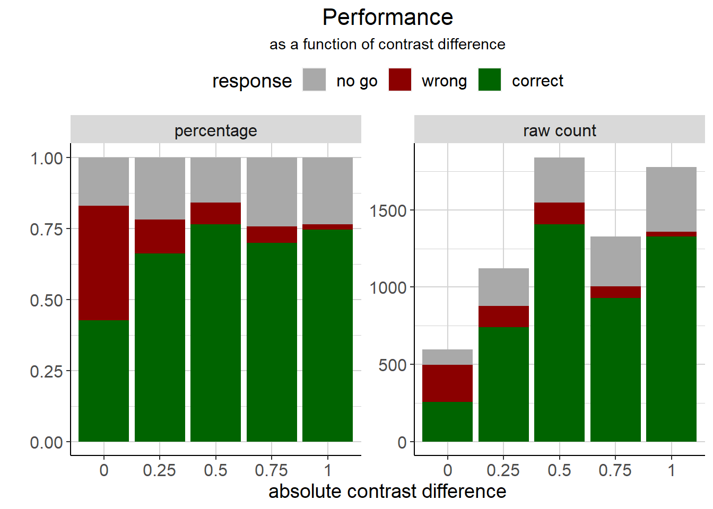

3 General stuff
Different contrasts and conditions are not distributed evenly.

3.1 Response times
We look at go trial response times first. For no-go responses (which are always wrong in a go trial), response times are of course always the same (1.5 s). For go responses that mice got correct, response times seem to get slightly shorter as the contrast difference increases (i.e. as trials get easier). For go responses that the mice got wrong (i.e. where they made a response, but chose the wrong side), response times seem to increase as the contrast difference increases. Thus, an error in an easy trial is likely to be slow, while it is faster in more difficult trials.
Note, however, that the mice got only very few trials wrong (i.e. made a response in the wrong direction) when the absolute contrast difference was 1 (i.e. there was only one stimulus shown): 33 out of 1778 trials with an absolute contrast of 1. Opposed to that, mice made 418 no-go responses out of 1778 trials with an absolute contrast of 1. That means, response times for wrong choices are probably not that meaningful for those trials.
Also note that there was no correct response for go trials with a contrast of 0. If the mouse made a go response, feedback was probabilistic. If the mouse made a no-go response, it was punished.

3.2 Performance
We want to look at the performance during go trials as a function of absolute contrast difference. That is, we want to see how often the mice got it correct or wrong and how often they made a no-go response. We need to take into account that there were different numbers of trials per contrast difference, so the data are shown as raw counts and as percentages.
We can see that different contrast levels had unequal amounts of trials. We also see that feedback is probabilistic in trials where there is no correct response (i.e. 0 contrast difference trials), except for no-go responses, which are always counted as wrong responses (but are shown separately here). As the contrast difference decreases (i.e. as trials get easier), mice do not really make less errors overall, but those errors are more likely to be no-go responses than incorrect responses.
